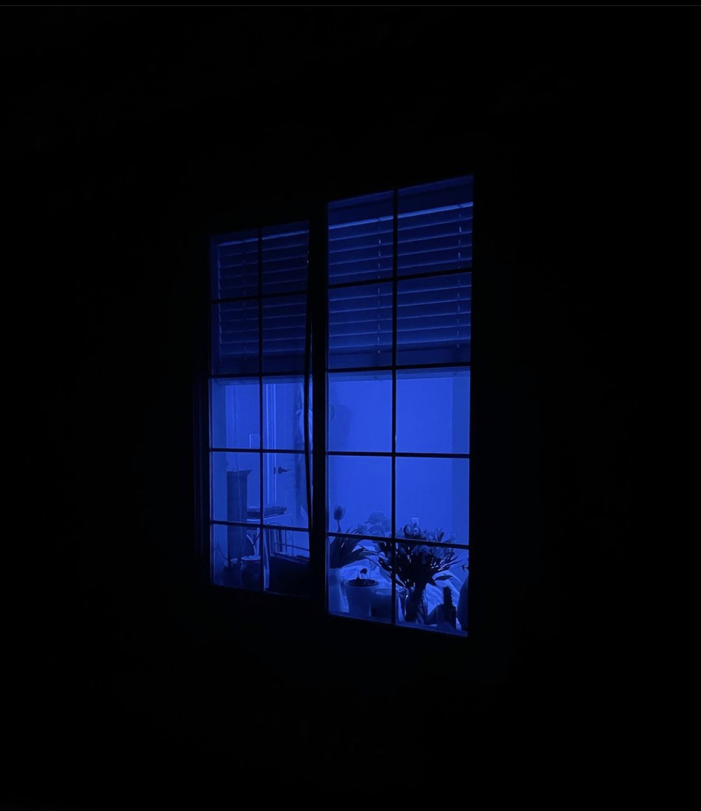

SYNTHESIS
Welcome to the world of SYNTHESIS, a subgenre of SUPERJUNK.com, an art collective based in Provo Utah.
"As soon as you can forget the naturally obvious and construct the artificial obvious, then you too will see"
wow we have some visual work to do! But I am eager to go wahoo!
